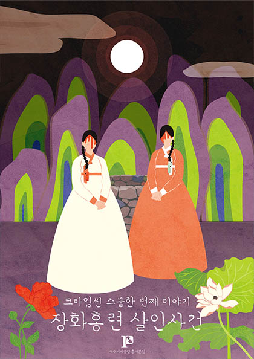

1530년(조선 중기, 허종 13년)
철산현의 현령으로 부임된 ‘원임’은 첫날 밤 기괴한 경험을 한다.
꿈에 처녀귀신이 나와 자신의 억울함을 풀어달라며 뒷산으로 와달라고 했다.
놀라서 잠에서 깬 원임은 심상치 않은 기운을 느끼고 뒷산으로 향하는데…
Comment: '크라임씬 퍼즐 팩토리'는 기존 방탈출과는 조금 다르게 롤플레잉 기반의 숨막히는 심리 추리게임 방탈출 카페입니다.
이런 점이 독특하고 재미있어서 소개드리게 되었습니다.
장화홍련 테마는 억울한 장화홍련 자매와 자매의 억울함을 풀어주는 원님을 중심으로 게임이 진행된다는 점에서 <장화, 홍련>과 비교해가며 플레이해보면 재미있으실 거예요!